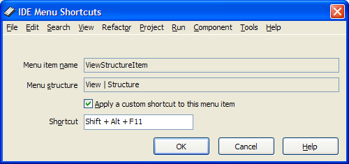

IDE Menu Shortcuts |
|
This expert enables you to configure any of the IDE menu shortcuts. To change the shortcut of a menu item, select the appropriate menu item, click "Use Shortcut Expert for this menu item" and type the desired shortcut into the Shortcut edit box. If you find your chosen shortcut does not work, it is likely because the shortcut is reserved by the code editor or another menu item, and you'll need to select a different, unused shortcut. This expert can not change the shortcuts for the GExperts menu items; for this purpose, use the GExperts Configuration dialog. 
|